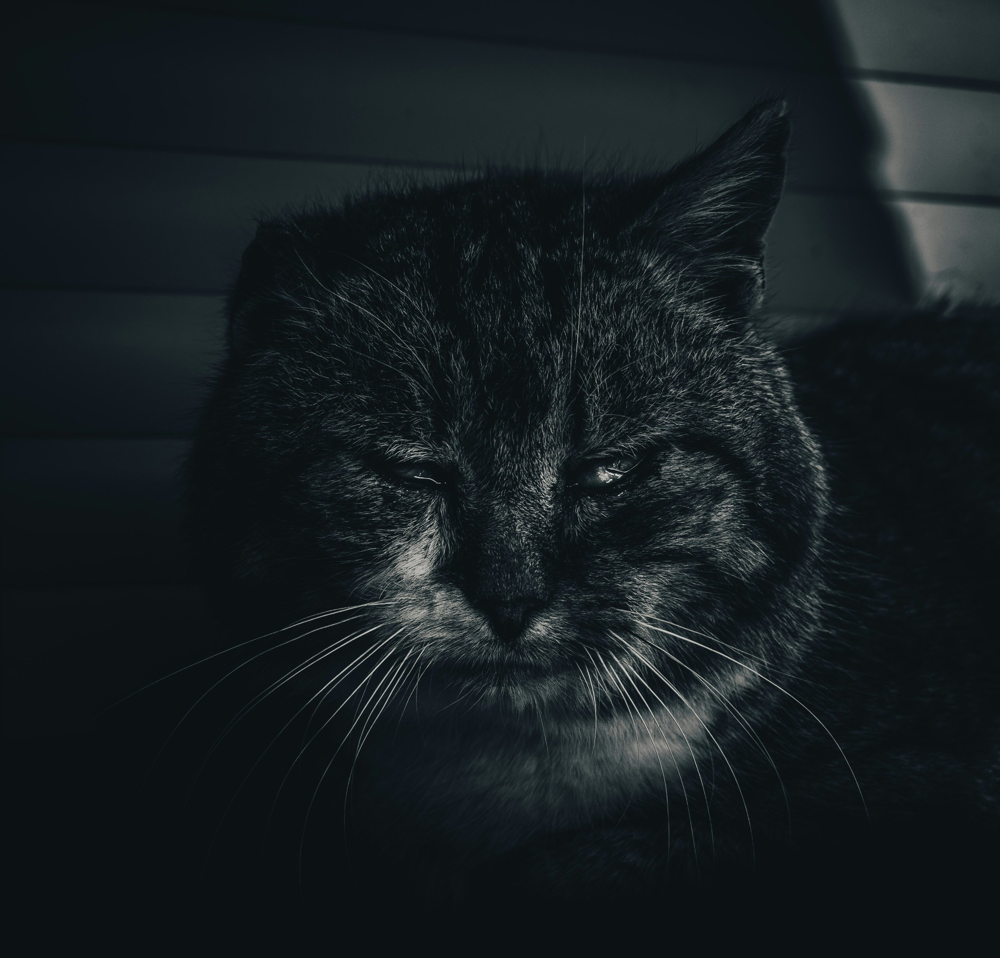

On 22 September 2026, a 43-year-old man in Zhambyl region bit a cat on a live TikTok stream. Hundreds watched. Police identified him and issued an administrative fine. Their statement: "Домашнее животное не пострадало" — the pet was not harmed.[1]
A law that exists, and doesn't.
Kazakhstan is not a country without animal protection laws. Article 316 of the Criminal Code criminalises cruelty to animals. The 2021 Law "On Responsible Treatment of Animals" declares animals "capable of experiencing pain and physical suffering" and prohibits cruelty toward them.[2] On 19 May 2026, President Tokayev signed Law No. 292-VIII, which raised maximum criminal sanctions to three years' imprisonment and legalised, under certain conditions, the state euthanasia of unclaimed stray dogs.[3]
What Kazakhstan does not have is a system that makes these laws work. Of 417 cases filed under Article 316 over a 10.5-year period, only 31 reached trial — a prosecution rate of 7.4 per cent.[4] Even when they do reach court, the sentences are light. In 2020, a man in Aktau was filmed on CCTV jumping on a cat's head; he was convicted under Article 316 Part 1 and sentenced to 60 hours of community work. The regional court felt the need to defend the sentence publicly on its Facebook page after online outrage.[5] In Kentau, a man beat his neighbour's dog, Sky, with a shovel; the dog survived with a hip fracture, spinal cord contusion and concussion. The criminal case was dismissed on the grounds that "no injuries were found on the dog," and police pressured the owner to reconcile with the attacker.[6]
The method of cruelty has shifted. In 2013, a teenager body-slammed a donkey for a viral video.[7] In 2020, a Pavlodar resident poured 70 per cent vinegar on a stray cat; this became the first regional conviction under Article 316 ever.[8] In April 2026, a blogger in Semey ran a kitten through a washing-machine cycle; she was fined.[9] By late 2026, cruelty moved live: the TikTok bite case in Zhambyl in September, a woman beating a cat on TikTok in October, and a separate case of a cat tortured "on live stream for donations."[10][11][12] The platforms changed. The outcomes did not.
The Interior Minister has himself conceded the problem. In a public briefing, Minister Yerlan Turgumbayev said Article 316's sanctions "are very small" and that the ministry would propose tougher penalties.[13] Yet five years later, those sanctions remain the ceiling, and even they are rarely reached.
The social-science question: why does a state that has written laws against animal cruelty fail to enforce them, and what would it take to make the enforcement visible? This is not a question of missing legislation. It is a question of missing infrastructure: no central record of which cases are opened, which are dismissed, and which end with 60 hours of community work. In the absence of that record, cruelty continues not because the state is helpless, but because it is unwatched.

The numbers Kazakhstan keeps, and the ones it doesn't.
There are two kinds of killing to count in Kazakhstan: cruelty by individuals, which Article 316 is meant to punish, and culling by the state, which is now explicitly legal. The first is under-counted. The second is counted in two incompatible ways, and in neither is the question asked whether it works.
What Kazakhstan does count
The General Prosecutor's Office recorded 127 criminal cases of animal cruelty under Article 316 in 2025, an 18 per cent increase over the previous year. Thirty-four of those were in Almaty and Almaty region.[14] A 2026 analysis by Vlast.kz, drawing on Ministry of Interior statistics, reports 74,296 Article 73 cases of cruelty and negligence in 2024, rising to 82,478 in 2025; of these, 55 per cent were dismissed with no action taken.[15]
The state also counts what it kills. According to the World Organisation for Animal Health (WOAH), in the first 8 months of 2023 Kazakhstan caught 131,807 dogs and 7,421 cats; it killed 104,092 dogs (79 per cent) and 5,156 cats (69 per cent).[16] In 2022, only 58 dogs were sterilised in the entire country while more than 80,000 were culled. In 2024, 85.3 per cent of 268,000 captured animals were killed. In 2025, of roughly 276,000 dogs captured, 12.6 per cent were sterilised and nearly 85 per cent euthanised.[17] Shymkent city alone budgets 41 million tenge per year for culling.[18]
What Kazakhstan does not count
At a WOAH regional seminar in December 2025, representatives of Kazakhstan's Ministry of Agriculture confirmed what activists have been saying for years: there is no unified database for dogs and cats in the country.[16] The existing pet registration platform, Tanba (tanba.kezekte.kz), is underused. Chipping is not mandatory. Each akimat (regional administration) sets its own capture and euthanasia timeframes under the May 2026 law, and the results are not aggregated.[3]
This is why Kazakhstan can simultaneously claim that cruelty cases are rising, that enforcement is improving, and that mass killing is necessary, without ever showing whether any of these are true. The data that would test the claims does not exist.
A secondary silence: the state does not count owned animals killed in state captures. Volunteer groups have repeatedly documented cases of pet dogs allowed outside being shot or taken by capture crews paid per animal, but there is no central record of these deaths, no requirement to scan for a microchip before killing, and no legal recourse for the owner.[19]
The chart tells the story the state cannot deny: capture numbers rose. Killing numbers rose with them. Sterilisation, the humane alternative the 2021 law was meant to mainstream, moved from 58 animals in 2022 to roughly 34,800 in 2025. The ratio of killed to sterilised in 2025 is approximately 7 to 1.
What we know, by approach.
Research on animal cruelty in Kazakhstan sits across three broad bodies of work. Each illuminates part of the problem; none has shaped Kazakhstan's own enforcement design.
1. Kazakhstani legal scholarship on Article 316
Lawyer Zhangeldy Suleymanov, writing for CABAR.asia, has argued that Article 316's narrow definition of the corpus delicti is the structural reason prosecutions fail. The article only recognises cruelty that produces severe injury or death, and there is no clear statutory definition of "severe injury." In practice, police dismiss cases when the animal survives, as in the Kentau shovel attack.[6] A 2024 analysis at MNU (Almaty) echoes this, identifying "a significant number of problems" in enforcement practice under both Article 316 and Articles 407-1 and 407-2 of the Code of Administrative Offences.[20] This literature agrees on the diagnosis — the law is under-defined — but stops short of proposing infrastructure that would force visibility onto enforcement.
2. "The Link": animal cruelty and interpersonal violence
A substantial international literature establishes that intentional animal cruelty is a reliable warning sign of violence against people. Addington and Randour (2024), using the FBI's National Incident-Based Reporting System data, find that intentional cruelty (as opposed to neglect) overwhelmingly co-occurs with another crime, often intimate partner violence or family violence; neglect does not.[21] Earlier work in the United States found that in four of five Wisconsin battering cases, abusers had also been violent toward pets, and that 88 per cent of New Jersey families with physical child abuse had records of animal abuse.[22] The FBI added animal cruelty as a trackable offence in 2014 precisely to enable this kind of research.[23] This literature is not used in Kazakhstani policy design, even though Kazakhstan passed a landmark domestic-violence law in April 2024 following the femicide of Saltanat Nukenova.[24]
3. The carceral critique of animal-abuser registries
The United States has moved further than Kazakhstan on cruelty enforcement, but not without controversy. Since Suffolk County, New York, launched the first US animal abuser registry in 2010, several New York counties, Tennessee and Florida have followed.[25] Harvard Law Review (2021) and Marceau in Carceral Logics beyond Incarceration (2022) argue that these registries risk repeating the failures of the sex-offender registry: expensive to maintain (~$468,000 initial cost in Washington State estimates), of unproven deterrent value, and apt to target the wrong people — hoarders with mental illness, youth, or those operating in economic or cultural contexts police do not understand.[26][27] The ASPCA itself opposes public abuser registries on these grounds.[28] This critique matters for Kazakhstan because any registry built here must avoid designing in the same failures.
The gap
Kazakhstani legal scholarship diagnoses Article 316's weakness but does not propose data infrastructure. "The Link" literature shows cruelty predicts human violence but has not been applied to Kazakhstan's domestic-violence policy architecture. The carceral critique warns against public registries, but has not been tested against a non-public, state-internal registry whose purpose is accountability rather than shaming. This project sits in that gap: it asks what data infrastructure Kazakhstan would need to make its own laws work, informed by what has failed elsewhere.
Tanba+: a national registry for a visible system.
The proposal is to extend Kazakhstan's existing pet-registration platform, Tanba, into a three-layer national registry linking the state's handling of animals, the courts' handling of cruelty cases, and (through warrant-controlled access only) the police's handling of domestic violence. AI's role is specific: pattern detection, standardised processing of video evidence, and the automated aggregation that makes dashboards possible. No decision in this system is made by AI. Every flag is reviewed by a human.
Part 1: Animal-side registry
Mandatory chipping for all owned dogs and cats, with a one-year transition subsidised from the current culling budget. Every shelter intake logged with date, location, health status, photographs, and the eventual outcome (sterilised, adopted, euthanised). Every euthanasia requires a veterinarian's signature with name and licence number, and the record is public. Each akimat's capture, sterilisation and euthanasia rates appear on a public monthly dashboard. This directly answers Demand 5 of the 100,000-signature e-Petition П-2026-00000313, submitted to the Ministry of Ecology on 8 May 2026, which asked for "a mandatory unified national database."[29]
Part 2: Case-outcome registry
Every Article 316 criminal case and every Article 407 administrative case logged with: case ID, date, region, charge, verdict, sentence, judge name. Public, searchable, downloadable. The 2020 Aktau cat case required the regional court to defend itself on Facebook because no one could find its ruling. A registry removes that friction. AI's role here is tagging and aggregation: classifying case types, flagging regional disparities in sentencing, surfacing patterns the Ministry has no incentive to publish.
Part 3: Cross-reference layer (internal only, warrant-controlled)
The "Link" literature says intentional animal cruelty predicts interpersonal violence. A cross-reference layer, accessible only to police on warrant or to social services on documented risk, would flag households where an animal-cruelty case and a domestic-violence case cluster. This is not a public abuser registry — avoiding the ASPCA's and the Harvard Law Review's warnings — but a referral mechanism inside the system. A flag triggers a human review, never an automatic action.
Who runs it
The Ministry of Ecology and Natural Resources (the e-Petition's addressee) as lead agency, with the Ministry of Internal Affairs responsible for the case-outcome layer, and an independent oversight commission including Zverohelp Astana, Inucobo (led by Lillia Sarsenova), StopOtlov Foundation, and the Union of Shelters. All data public from day one with the exception of Part 3, which is warrant-controlled.
Two real case studies
Georgia's national stray-animal database. CABAR.asia documents that Georgia (the country) has built a single national database of stray animals, a point its reporting raises as a direct comparator for what Kazakhstan lacks.[30] The Georgian model demonstrates that a Central Asian / Caucasus state with comparable resources can operate a functioning database; Kazakhstan's absence of one is a political choice, not a technical limitation.
The FBI's NIBRS animal-cruelty collection (United States, 2014–). The FBI's decision to track animal cruelty in NIBRS has enabled the research literature on "the Link" (Addington & Randour 2024 cited above). Its lesson for Kazakhstan is positive: adding animal cruelty to a national reporting system produces data that researchers and prosecutors can use. Its lesson is also cautionary: NIBRS is a government-held dataset with restricted access, which has drawn critique for methodological opacity.[31] Kazakhstan's version should be public by default.
The Bill
Environmental
The system is a national chip database, a case-tagging layer, and a public dashboard — not a large generative model. The compute footprint is modest: on the order of a medium government web service. However, Kazakhstan's electricity grid is roughly 70 per cent coal-fired, so even modest server energy carries carbon cost. Image classification for shelter intake photos, if used, adds load; this should be cached and reviewed in batches, not run on every upload.
Economic
The state currently spends measurable sums on culling: Shymkent alone budgets 41 million tenge per year.[18] Extended nationally, culling costs run into billions of tenge annually. The proposal is that the registry's build and running costs come from this existing budget, not from additional allocations. Cities that reduce culling by increasing sterilisation and adoption (both of which the registry tracks) free resources for the registry itself. The alternative — the registry as an "add-on" to continued culling — would fail on political grounds and on the terms of the e-Petition.
Labor
Veterinarians become mandatory reporters of suspected cruelty (modelled on child-abuse mandatory reporting in other jurisdictions), with legal protection. This adds work, but centralises what is now informal and scattered. Shelter workers' recording work increases in the short term; over time, standardised forms reduce it. The capture-crew contracting model (per-animal payment) would need to change to a fixed-fee or outcome-based contract to remove the perverse incentive to maximise capture and killing.
Political and governance
Kazakhstan's Law No. 230-VIII "On Artificial Intelligence" (signed November 2025, in force January 2026) requires data localisation and purpose limitation; a Kazakhstani registry hosted on Kazakhstani servers satisfies both, while rejecting foreign-cloud alternatives.[32] The registry sits at a sensitive interagency boundary: the Ministry of Ecology lacks criminal-case authority; the Ministry of Internal Affairs tends toward surveillance. The oversight commission, with civil-society seats held by Zverohelp Astana, Inucobo and StopOtlov Foundation, is the mechanism by which the two are kept honest. Without it, Part 3 (the cross-reference layer) becomes a surveillance tool.
Data ethics
The animal-side and case-outcome layers (Parts 1 and 2) contain no personally sensitive human data beyond veterinarian names and judge names, both of which are already public in Kazakhstan. The cross-reference layer (Part 3) is the ethical hinge. Access must be warrant-controlled, logged, and audited by the oversight commission. Social-services referrals triggered by a flag must themselves be reviewed by a human before any contact with the household. The system must never generate a public list of "potential abusers." This is what distinguishes the proposal from the US registry model the ASPCA opposes.
Yes, but only.
Should Kazakhstan build this? Yes — but only under five conditions. A registry built without them becomes a more efficient killing machine, which is not what citizens asked for in the e-Petition and not what the research literature supports.
- Public by default, downloadable by akimat and month. Dashboards that cannot be interrogated are decoration. The registry must publish raw data, not just visualisations.
- No public-shaming of individual offenders. The cross-reference layer (Part 3) is internal and warrant-controlled. Conviction records already exist in the public case-outcome registry (Part 2); duplicating them as a "sex-offender-style" public list reproduces failures the ASPCA and Harvard Law Review have documented.
- Funded from the existing culling budget, not in addition. Cities must face the choice. Added money without substitution means the state does both: kills at the current rate and runs a registry alongside. That is not the demand the e-Petition made.
- AI flags patterns, never individuals. Every flag (a regional sentencing anomaly, a household co-occurrence) triggers human review before any action. No automated enforcement, no scoring of persons, no behavioural prediction on individual animals (which would reproduce the "aggression" loophole the May 2026 law created).
- Civil-society representation on the oversight commission is legally binding, not advisory. Zverohelp Astana, Inucobo and StopOtlov Foundation have earned this role through the 100,000-signature campaign. Without binding seats, the commission becomes a consultative fig leaf.
If these conditions hold, the registry can do what punishment alone has not: make the state's own choices visible, give prosecutors the evidence to raise the Article 316 conviction rate above 7 per cent, and connect animal-cruelty records to the domestic-violence prevention system Kazakhstan already says it wants. If they do not hold, this project's honest recommendation is that Kazakhstan should not build the registry at all, and should instead redirect the culling budget to the sterilisation programs the 2021 law already requires.
Punishment on paper is not the same as accountability. Kazakhstan does not need a harsher law. It needs a record.
AI Transparency Statement
This project was produced with Claude (Anthropic), under the AI co-working policy of PLS 519. Claude helped locate and verify sources, summarise academic literature, draft text, build this website, and draw the chart. All factual claims were verified by opening each source and reading the sentence that supports them. Direct quotations from Russian-language sources were transcribed verbatim from the originals.
The following choices and judgements are the author's own: the topic selection; the decision to centre the research question on enforcement rather than legislation; the opening with the TikTok case; the three-layer structure of the Tanba+ proposal; the five conditions of the verdict; and the decision to reject a public abuser registry despite civil-society calls for one, in favour of an internal, warrant-controlled cross-reference layer.
Material rejected during drafting includes an earlier framing in which the May 2026 law was presented as unopposed mass-euthanasia legislation; this was corrected after the author provided evidence of the Senate's April 2026 revisions and the final text of Law No. 292-VIII. An initial image set was also rejected because its provenance could not be verified. The hero image is the author's own photograph.
The AI Process Log for this project is submitted separately on Moodle.
References
- Tengrinews.kz, "Казахстанца доставили в полицию за прямой эфир с кошкой," 22 September 2026. tengrinews.kz
- Law of the Republic of Kazakhstan "On Responsible Treatment of Animals" (adopted 30 December 2021).
- Zakon.kz, "Эвтаназия бродячих собак в целях регулирования их численности разрешается с 20 июля," 17 July 2026. Law of the Republic of Kazakhstan No. 292-VIII of 19 May 2026. zakon.kz
- CABAR.asia, "Kazakhstan drafts new animal protection law," citing data from the Committee for Legal Statistics and Special Records of the General Prosecutor's Office. cabar.asia
- NUR.KZ, "Суд Мангистау объяснил мягкий приговор казахстанцу, прыгнувшему на голову кошки." nur.kz
- Caspian Post, "In Kazakhstan, the Fight Against Animal Cruelty is Far from Over." caspianpost.com
- Eurasianet, "Cruelty to animals has hit the headlines in Kazakhstan." eurasianet.org
- NUR.KZ, "Казахстанке, облившей кошку уксусом, вынесли приговор." nur.kz
- Kursiv.media, "Kitten death in a washing machine sparks outrage online," 20 April 2026. kursiv.media
- Tengrinews.kz, cat-bite TikTok case, 22 September 2026 (same as [1]).
- Qumash.kz, "Не канает: казахстанка мучила и материла кошку в эфире TikTok," 17 October 2026. qumash.kz
- Zakon.kz, "Мучили кошку в прямом эфире за донаты: полиция отреагировала на резонансное видео," 22 September 2026. zakon.kz
- Tengrinews.kz, "Глава МВД высказался о легких наказаниях для живодеров." tengrinews.kz
- Finance.kz, animal cruelty cases 2025. finance.kz
- BEARR Trust / Vlast.kz, "How Kazakhstan is dealing with domestic violence" (Article 73 cruelty data), 7 July 2026. bearr.org
- World Organisation for Animal Health (WOAH), Kazakhstan country report, 2023. rr-europe.woah.org
- Global Voices, "Kazakhstan's stray animal reforms reignite debate over public safety and humane policies," 8 June 2026. globalvoices.org
- Tengrinews.kz, "Казахстанцы просят правительство защитить бездомных животных" (Shymkent 41 million tenge). tengrinews.kz
- CABAR.asia, "Animal control in Kazakhstan: the flawed mechanism." cabar.asia
- Legal responsibility for animal cruelty, cal.mnu.kz. cal.mnu.kz
- Addington, L. and Randour, M. L. (2024). "Exploring the Link Between Animal Cruelty and Intimate Partner and Family Violence." Journal of Family Violence. DOI 10.1007/s10896-024-00684-1. springer.com
- Turner, N. (2000). "Animal Abuse and the Link to Domestic Violence." Police Chief, 67(6): 28-30. ojp.gov
- American University School of Public Affairs, "Exploring the Link." american.edu
- UN Women, "Ending domestic violence in Kazakhstan: stories from survivors and allies." unwomen.org
- The Florida Bar Journal, "The Growing Trend of Animal-Abuser Registries." floridabar.org
- Harvard Law Review (2021), "Palliative Animal Law: The War on Animal Cruelty," 134 Harv. L. Rev. F. 250. harvardlawreview.org
- Kamin, S. (2022). "Against a 'War on Animal Cruelty.'" In Carceral Logics beyond Incarceration, Cambridge University Press. cambridge.org
- ASPCA, "Position Statement on Animal Abuser Registries." aspca.org
- ePetition.kz, Petition No. П-2026-00000313, "Остановите убийства животных: за гуманный закон!" published 8 May 2026, addressed to the Ministry of Ecology and Natural Resources of the Republic of Kazakhstan. epetition.kz
- CABAR.asia, on Georgia's single database of stray animals (reference 19 above).
- International Journal for Crime, Justice and Social Democracy (2022), critique of FBI NIBRS animal-cruelty data. austlii.edu.au
- Law of the Republic of Kazakhstan No. 230-VIII "On Artificial Intelligence" (signed November 2025, in force 1 January 2026).